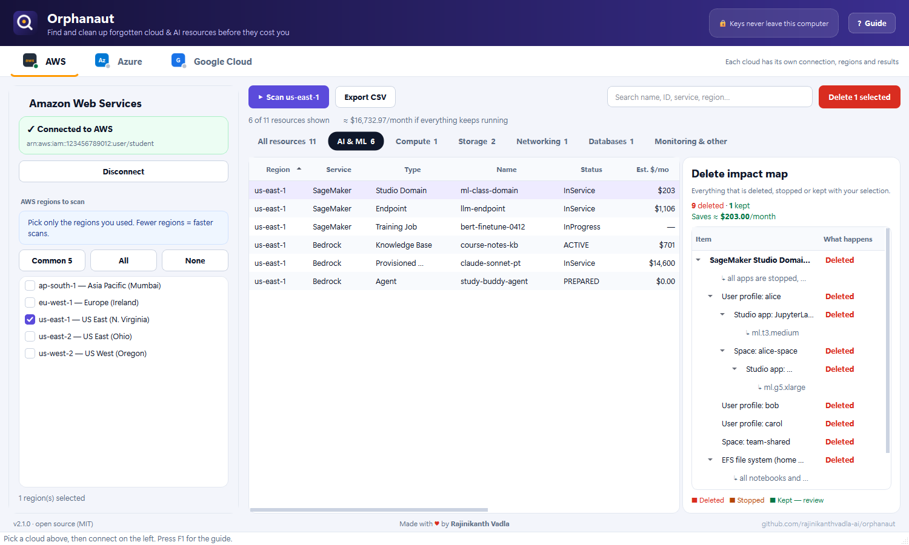

☁️ Three clouds, one app
AWS, Azure and Google Cloud tabs, each with its own sign-in, regions and results.
🤖 AI & ML cleanup
SageMaker domains and endpoints, Bedrock knowledge bases and Claude provisioned throughput, Azure OpenAI, Azure ML, Vertex AI and more.
🗺️ Delete impact map
See every associated resource that is deleted, stopped or kept — before you confirm.
🔑 Easy sign-in
Paste keys, sign in with your browser, or reuse the CLI login already on your computer.
💸 Cost estimates
Rough monthly cost per resource so you remove the expensive leftovers first.
🔒 Private & safe
Keys stay on your device. In-use resources are locked. Nothing is deleted without confirmation.
Download
| Windows 10/11 | Orphanaut-Setup-Windows.exe — installer, no admin needed (or the portable zip) |
|---|---|
| Mac (Apple Silicon) | Orphanaut-macOS-AppleSilicon.dmg |
| Mac (Intel) | Orphanaut-macOS-Intel.dmg |
All files are on the latest release page.
How it works
- Pick a cloud and connect — keys, browser sign-in, or the login on your computer.
- Choose the regions you used and press Scan.
- Open the AI & ML tab, click a resource and read its delete impact map.
- Select what you don't need and delete it safely.